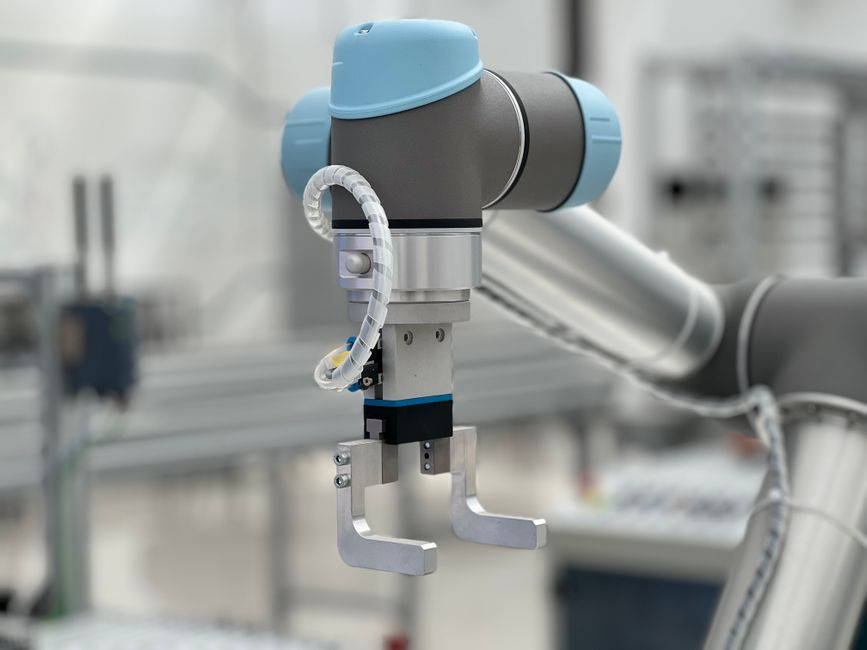

Imagine a world where robots aren't just confined to cages, performing repetitive tasks far away from humans. Instead, picture them working right alongside us, lending a helping hand, making our jobs easier, safer, and more efficient. This isn't science fiction; it's the exciting reality of Collaborative Robots, or "Cobots"! Here at MakerWorks, we're thrilled to dive into the fascinating world of human-robot collaboration and explore how these intelligent machines are revolutionizing industries and opening new doors for innovation, especially for young minds eager to shape the future of technology in India.
What Exactly are Cobots?
At their core, cobots are industrial robots designed to work directly with humans in a shared workspace without the need for safety fences. Unlike traditional industrial robots, which are typically large, fast, and require strict safety enclosures, cobots are built with inherent safety features that allow them to operate safely in close proximity to people.
Think of it like this: A traditional industrial robot is a powerful, specialized tool that needs its own dedicated space. A cobot, however, is more like a helpful assistant, designed to be aware of its surroundings and react to human presence. They are a cornerstone of modern factory automation, bringing flexibility and efficiency to tasks that previously required either full human attention or massive, dedicated robotic systems.
Key Characteristics of Cobots:
- Safety: Equipped with advanced sensors and software that detect human presence and prevent collisions or apply limited force.
- Ease of Use: Often feature intuitive, graphical user interfaces and can be programmed by demonstration (hand-guiding).
- Flexibility: Lightweight and compact, making them easy to move and redeploy for different tasks.
- Cost-Effective: Generally more affordable than traditional industrial robots, making them accessible to smaller businesses (SMEs).
- Human-Robot Collaboration: Designed from the ground up to work *with* humans, not just *for* them.
Why are Cobots a Game-Changer?
The rise of cobots marks a significant shift in how we approach automation. They're not just about replacing human labor; they're about augmenting it, creating a synergy that combines the best of both worlds.
Enhanced Safety
This is perhaps the most defining feature. Cobots are engineered with multiple layers of safety mechanisms, adhering to strict international standards like ISO 10218-1 and ISO/TS 15066. They can:
- Stop on Contact: If a cobot detects an unexpected contact with a human or object, it can instantly stop or reverse its motion.
- Force Limiting: They can be programmed to operate with limited force, ensuring that even if a collision occurs, the impact is minimal and safe.
- Speed Monitoring: Their speed can automatically adjust based on human proximity, slowing down as a person gets closer.
This "safe robots" aspect is crucial, as it opens up possibilities for automation in environments where traditional robots were deemed too risky or cumbersome.
Increased Productivity and Quality
By taking over repetitive, strenuous, or dangerous tasks, cobots free up human workers to focus on more complex, creative, or value-added activities. Imagine a cobot holding a part steady while a human performs a delicate assembly, or a cobot consistently applying adhesive while a human checks for quality. This human-robot collaboration leads to:
- Fewer errors and greater consistency.
- Faster production cycles.
- Reduced strain and injury for human workers.
Flexibility and Adaptability
In today's fast-changing manufacturing landscape, companies need to be agile. Cobots excel here. Their smaller footprint and ease of programming mean they can be quickly moved and reprogrammed for new tasks or product variations. This is a huge advantage for industries that deal with high-mix, low-volume production, common in many sectors across India.
Accessibility for SMEs (Small and Medium-sized Enterprises)
Historically, industrial automation was a massive investment, often out of reach for smaller businesses. Cobots, with their lower initial cost, simpler integration, and reduced need for extensive safety infrastructure, are democratizing automation. This means more Indian businesses can leverage robotics to compete globally, boosting local economies and creating new opportunities.
How Do Cobots Work Safely Alongside Humans?
The magic of cobots lies in their sophisticated sensory and control systems. Here's a peek into how they achieve such remarkable safety:
Sensors Galore
Cobots are equipped with an array of sensors:
- Force-Torque Sensors: Located in their joints, these detect external forces, allowing the cobot to stop or yield if it encounters an obstruction.
- Vision Systems: Cameras help cobots "see" their environment, identify objects, and detect human presence.
- Proximity Sensors: These can detect objects or people approaching the cobot's workspace, triggering a slowdown or stop before contact.
Force and Power Limiting
Cobots are designed to operate within strict force and power limits. This means their motors won't exert excessive force, and their movements are carefully controlled. If they detect a resistance beyond a safe threshold, they immediately stop.
Safety-Rated Monitored Stop
Many cobots can be programmed to perform a "safety-rated monitored stop." If a human enters a designated safety zone around the cobot, it will pause its operation. Once the human leaves the zone, the cobot can automatically resume its task, saving valuable production time compared to a full shutdown.
Hand Guiding
This is a particularly intuitive way to program cobots. Operators can physically grab the cobot's arm and move it through the desired path, "teaching" it the sequence of movements. The cobot then remembers these positions and actions, making programming incredibly fast and straightforward, even for those without extensive coding experience.
"The most advanced form of human-robot collaboration isn't just about robots doing tasks for humans, but about robots and humans working together, each enhancing the other's capabilities to achieve a shared goal."
Cobots in Action: Real-World Applications
Cobots are finding their way into a wide variety of industries, performing tasks that require both precision and interaction.
- Assembly: From intricate electronics to automotive components, cobots can assist humans with repetitive assembly tasks, like screwing, gluing, or inserting parts.
- Packaging and Palletizing: They can efficiently pick and place items into boxes or stack them onto pallets, reducing manual labor and improving speed.
- Machine Tending: Cobots can load and unload parts from CNC machines, injection molding machines, or other equipment, allowing human operators to manage multiple machines or perform quality checks.
- Quality Inspection: Equipped with vision systems, cobots can perform consistent and tireless quality checks, identifying defects that might be missed by the human eye.
- Logistics and Material Handling: Moving components between workstations or assisting with warehouse operations.
In India, cobots are already making an impact in sectors like automotive, electronics manufacturing, and even in smaller workshops looking to scale up their operations without massive infrastructure changes. Their adaptability makes them perfect for the diverse manufacturing landscape of our country.
Programming a Cobot (A Glimpse)
While many cobots are programmed using intuitive graphical interfaces or hand-guiding, understanding the underlying logic is key for future roboticists. Here's a simplified, conceptual pseudo-code example of a cobot performing a pick-and-place task while ensuring human safety:
# Conceptual Pseudo-code for a Cobot Pick-and-Place Task
FUNCTION main_task():
INITIALIZE_COBOT()
SET_SPEED(NORMAL_SPEED)
LOOP FOREVER:
IF CHECK_FOR_HUMAN_PRESENCE_IN_ZONE():
PRINT("Human detected! Pausing operation for safety.")
PAUSE_COBOT()
WAIT_UNTIL_HUMAN_LEAVES_ZONE()
PRINT("Human left zone. Resuming operation.")
RESUME_COBOT()
END IF
# If no human detected, proceed with task
IF PART_AVAILABLE_AT_PICK_LOCATION():
MOVE_TO_PICK_LOCATION()
GRIP_PART()
MOVE_TO_PLACE_LOCATION()
RELEASE_PART()
PRINT("Part picked and placed successfully.")
ELSE:
PRINT("Waiting for part...")
WAIT(1000) # Wait for 1 second
END IF
END LOOP
FUNCTION CHECK_FOR_HUMAN_PRESENCE_IN_ZONE():
# This would involve reading data from vision sensors, proximity sensors, etc.
# Returns TRUE if a human is detected, FALSE otherwise.
RETURN SENSOR_READING_HUMAN_DETECTED()
FUNCTION WAIT_UNTIL_HUMAN_LEAVES_ZONE():
WHILE CHECK_FOR_HUMAN_PRESENCE_IN_ZONE():
WAIT(500) # Check every 0.5 seconds
END WHILE
This pseudo-code illustrates how a cobot constantly monitors its environment and integrates safety checks directly into its operational flow. The `CHECK_FOR_HUMAN_PRESENCE_IN_ZONE()` function is where all the sensor data comes into play, making the robot truly "aware" of its surroundings.
The Future is Collaborative
The market for cobots is growing rapidly, both globally and in India. As technology advances, cobots will become even more intelligent, capable of learning, adapting, and interacting with humans in increasingly sophisticated ways. They represent a future where automation doesn't replace human ingenuity but rather amplifies it.
For students and aspiring engineers in India, understanding cobots is not just about learning a new technology; it's about preparing for a future where human-robot teams will be the norm. These collaborative automation solutions are driving innovation across manufacturing, healthcare, and even service industries.
Conclusion
Collaborative robots are more than just a technological marvel; they are a testament to our ability to design machines that enhance human potential. By combining the precision, strength, and endurance of robots with the adaptability, problem-solving skills, and creativity of humans, cobots are paving the way for safer, more productive, and more fulfilling work environments.
At MakerWorks, we believe that understanding and experimenting with technologies like cobots is vital for the next generation of innovators. We encourage you to explore, learn, and imagine how you can leverage the power of collaborative robots to solve real-world problems and build a brighter, more automated, and collaborative future for India!
Ready to dive deeper into robotics? Check out our workshops and courses at MakerWorks and start your journey into the world of STEM and automation today!